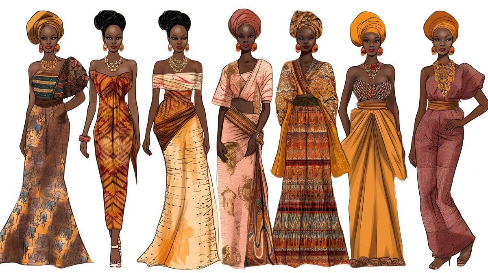
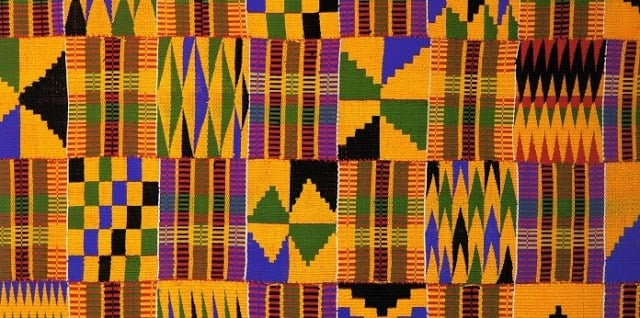
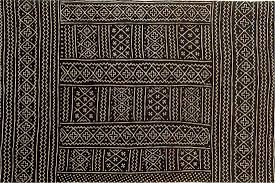
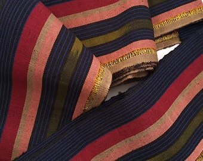
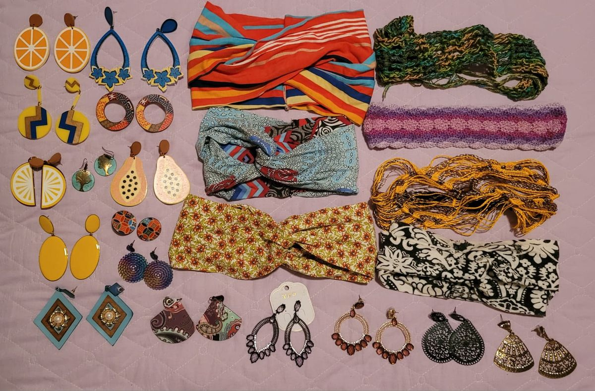

As vestimentas africanas variam enormemente de região para região, com uma grande diversidade de tecidos, cores e estilos. Alguns dos tecidos mais populares incluem o kente, um tecido colorido originário de Gana, e o adire, um tipo de tecido tingido à mão muito utilizado na Nigéria.

O vestuário africano é uma expressão rica de cultura, história e identidade. Ao longo do continente africano, cada região, etnia e grupo cultural tem seu próprio estilo de roupas, tecidos e acessórios, que vão além da moda, refletindo valores sociais, espirituais e políticos.
O vestuário africano tem um profundo significado cultural, e suas peças são muitas vezes carregad
as de simbolismo e tradição.
Informações:
A África é um continente com uma grande diversidade de materiais usados na confecção de roupas. Alguns dos tecidos mais conhecidos incluem:
•Kente: Um dos tecidos mais emblemáticos de África, originário de Gana, o Kente é feito à mão, geralmente com fios de seda ou algodão.
O padrão geométrico e as cores vibrantes do Kente possuem significados específicos, muitas vezes representando conceitos como sabedoria, poder,
paz e realeza. 
•Ankara (ou Wax print): Este é um tecido de algodão estampado muito popular em várias partes da África Ocidental. Suas cores vivas e padrões
distintos têm raízes na tradição africana e são usados para fazer roupas como vestidos, saias, camisas e turbantes.
•Bogolanfini: Um tecido tradicional de Mali, também conhecido como "tela de lama", que é tingido com
lama de forma artesanal. Ele é muito apreciado em cerimônias importantes e está associado a sabedoria e espiritualidade. 
•Aso-oke: Um tecido tradicional do povo Yoruba, na Nigéria,
utilizado para fazer roupas cerimoniais, como o "Agbada", que é um traje masculino formal, e
o "Iro" e "Buba", usados pelas mulheres. 
Acessórios na Cultura Africana
Os acessórios são uma parte essencial da cultura africana, usados tanto para embelezamento quanto para simbolizar status e pertença a determinadas comunidades. Colares, pulseiras, anéis e chapéus fazem parte de diversas cerimônias e rituais.
Colares: Usados para expressar identidade tribal e social.
Pulseiras e anéis: Frequentemente feitos de metais como cobre ou bronze.
Chapéus: Um sinal de respeito e status em várias culturas africanas.

Informações
Acessórios e Adornos
Os acessórios têm um papel fundamental na cultura africana, não apenas como elementos estéticos, mas também como símbolos de status, espiritualidade e identidade.
Alguns acessórios comuns incluem:
•Colares e Braceletes: Na maioria das culturas africanas, os colares
e braceletes são feitos de materiais naturais, como contas, marfim, cobre e madeira, e carregam si
gnificados espirituais ou de status social. Para algumas comunidades, certos adornos podem ser usados para i
ndicar que uma pessoa é casada, tem filhos ou ocupa uma posição de liderança.
•Turbantes: O turbante é um acessório de cabeça muito utilizado em
várias partes da África, especialmente na África Ocidental e no norte do continente.
Ele pode representar status social, identidade tribal ou religiosa, e é também uma forma de proteção contra o sol.
•Máscaras e Joias: Em muitas culturas africanas, as máscaras são usadas durante cerimônias espirituais e religiosas, para conectar os indivíduos
com os ancestrais ou com entidades espirituais. As máscaras podem ser feitas de madeira, metal ou outros materiais naturais, e suas formas e cores variam conforme a função e a tradição.
Significado Cultural das Vestimentas e Acessórios
Na cultura africana, as vestimentas e acessórios têm um profundo significado simbólico. Cada cor, forma e material usado pode representar valores espirituais, familiares ou tribais. Além disso, as roupas e adornos podem indicar o estágio de vida de uma pessoa, como a juventude, a maturidade, ou a passagem para uma nova fase.
Por exemplo, o kente de Gana pode simbolizar sabedoria, sucesso e força, enquanto o uso de colares e pulseiras pode ser visto como uma conexão com os ancestrais ou um sinal de proteção espiritual.
Significado:
Significado Cultural do Vestuário
O vestuário africano é muito mais do que uma questão estética: ele está profundamente ligado à identidade cultural, valores sociais e expressões espirituais. Algumas das funções simbólicas do vestuário incluem:
• Identidade e Status Social: Muitas roupas
e acessórios indicam a posição de uma pessoa dentro de uma comunidade.
Por exemplo, nas sociedades africanas, certos trajes são reservados para cerimônias
especiais ou para líderes espirituais, enquanto outros podem ser usados para marcar uma transição de vida, como a chegada à maturidade ou o casamento.
• Conexão com os Ancestrais: Muitas peças de vestuário e adornos são considerados um meio de conectar os vivos com os mortos.
Através de certos tecidos, cores ou estilos, os africanos buscam honrar seus ancestrais e manter viva a memória de suas linhagens.
• Espiritualidade e Crenças: O vestuário também tem uma relação direta com as crenças religiosas. Por exemplo, algumas roupas e adornos são usados durante rituais e
cerimônias religiosas, como os cultos de voodoo, os rituais de iniciação ou os festivais tradicionais.
• Protesto e Resistência: Durante a história moderna,
especialmente nas diásporas africanas, o vestuário tem sido uma forma de resistência política e social.
Por exemplo, o uso de roupas tradicionais e coloridas durante o período colonial foi uma maneira de afirmar a identidade africana e resistir à imposição das normas culturais europeias.
•Influência Global e Moda Contemporânea
Nos tempos modernos, o vestuário africano tem influenciado a moda global de maneira crescente.
Estilos e padrões africanos, como o Kente e o Ankara, são usados por designers internacionais e celebridades, ajudando a promover uma maior apreciação pela estética africana.
Além disso, a moda africana contemporânea combina tradições ancestrais com influências modernas. Designers africanos como Ozwald Boateng, Stella Jean e, mais recentemente,
marcas como a Tongoro, estão quebrando barreiras e trazendo a cultura africana para as passarelas internacionais, misturando técnicas de costura tradicionais com abordagens contemporâneas.